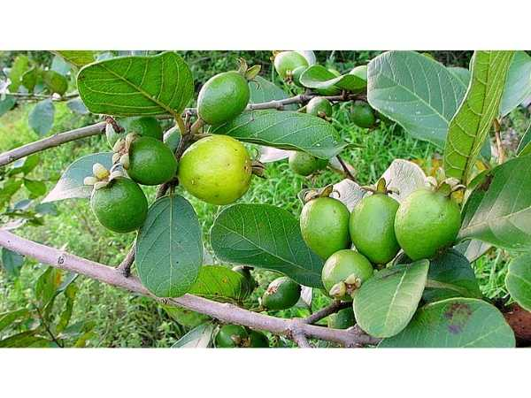

Psidium guineense
Common Names: Grape Guava, False Jaboticaba, Blue Grape, Vexator
Local Name: Grape Guava (English)
Family: Myrtaceae
Origin: South America (Brazil, Paraguay, Argentina)
Plant Type: Perennial evergreen shrub to small tree
Variety: Species type — small grape-like fruit borne directly on trunk and branches (cauliflorous)
Average Lifespan: 30–50+ years
| Growth Habit | Slow-growing, multi-stemmed evergreen shrub or small tree; attractive flaking bark |
| Plant Size | 2–6 meters tall; compact canopy 2–4 meters wide |
| Leaves | Opposite, elliptic, 3–7 cm long, glossy dark green; new growth reddish; aromatic |
| Flowers | Small white flowers, 5–8 mm across; borne directly on trunk and older branches (cauliflorous) |
| Flower Characteristics | Cauliflorous habit (like jaboticaba); fragrant; attract small insects and bees |
| Fruit | Small round berry, 1–2 cm diameter; thin skin, translucent sweet flesh; grape-like appearance and texture |
| Fruit Color | Green turning dark purple to black when ripe |
| Seed Characteristics | 1–2 small seeds per fruit; round |
| Root System | Fibrous, non-invasive; suitable for garden and container growing |
| Climate | Tropical to warm subtropical; more cold-tolerant than jaboticaba |
| Temperature Range | 18–32°C ideal; tolerates brief frost to −3°C (mature plants) |
| Rainfall Requirement | 800–2000 mm annually; prefers consistent moisture |
| Soil Type | Rich, well-drained acidic soil; high organic matter |
| Soil pH Preference | 5.0–6.5 (acidic) |
| Sun Requirement | Full sun to partial shade |
| Spacing | 3–5 meters between plants |
| Irrigation Method | Regular watering; drip irrigation preferred |
| Water Requirement | Moderate; keep soil consistently moist |
| Can it Grow in Pots? | Yes, excellent container plant (20–30 liters); slow growth suits pots well |
| Fertilizer Schedule | 3–4 times per year; acidifying fertilizers preferred |
| Recommended Organic Fertilizers | Compost, acidifying organic fertilizers, pine bark mulch, fish emulsion |
| Pesticide Frequency | Rarely needed; naturally pest-resistant |
| Recommended Organic Pesticides | Neem oil for occasional scale; bird netting during fruiting |
| Mulching Practice | Thick acidic mulch (pine needles, bark) to maintain soil acidity |
| Training System | Natural multi-stemmed form; minimal training needed |
| Pruning Time | After fruiting; light shaping any time |
| How to Prune | Minimal pruning; remove dead branches; thin if too dense |
| Common Pests | Birds, fruit fly (minor), occasional scale |
| Common Diseases | Generally disease-free; occasional root rot in waterlogged conditions |
| Disease Prevention & Remedies | Good drainage; avoid waterlogging; minimal intervention needed |
| Flowering Months | Spring to summer; may flower multiple times per year |
| Fruiting Season | Summer; 3–4 weeks after flowering |
| Days to Harvest | 21–30 days from flowering (rapid) |
| Harvest Indicators | Fruit turns dark purple-black; softens; sweet grape-like aroma |
| Average Yield per Plant | 3–10 kg per plant per year (mature) |
| Pollination Type | Self-fertile; insect-pollinated |
| Pollination Notes | Small bees and insects pollinate cauliflorous flowers |
| Pollination Details | Self-fertile; small insects pollinate trunk-borne flowers |
| Propagation by Seeds | Fresh seeds germinate in 4–8 weeks; seedlings slow-growing; fruit in 4–6 years |
| Propagation by Cuttings | Difficult; air layering more successful |
| Propagation by Grafting | Can be grafted on Myrciaria rootstock; reduces time to fruiting |
| Water Usage | Moderate; adapted to subtropical rainfall |
| Soil Conservation Practices | Non-invasive root system; mulching enriches soil |
| Organic Practices Used | Low-input species; minimal chemical requirements |
| Companion Plants | Other Myrtaceae, acid-loving plants, ferns |
| Biodiversity Benefits | Fruit attracts birds; flowers support small pollinators |
| Commercial Production Regions | Southern Brazil, Florida (USA); niche rare fruit market worldwide |
| Market Uses | Fresh fruit, ornamental plant, rare fruit collections |
| Processing Uses | Fresh eating, jams, wine; similar uses to jaboticaba |
| Market Value (Approx.) | ₹400–1000 per kg (rare fruit premium); highly sought by collectors |
| Symbolism | Called "vexator" because it vexes (confuses) botanists — closely resembles jaboticaba |
| Traditional Uses | Fruit eaten fresh by indigenous communities; bark and leaves used in folk medicine |
| Calories | 45 kcal per 100g (estimated) |
| Dietary Fiber | 1.5 g per 100g |
| Vitamin C | Moderate levels (similar to jaboticaba) |
| Vitamin A | Present (anthocyanin pigments) |
| Iron | Trace amounts |
| Potassium | Present |
| Antioxidants | Anthocyanins, phenolic compounds, flavonoids |
| Other Key Nutrients | Calcium, phosphorus, B vitamins |
| Anxiety & Sleep | Not a primary medicinal use |
| Immune Support | Antioxidant content supports general health |
| Anti-inflammatory Properties | Anthocyanins show anti-inflammatory activity |
| Heart Health | Anthocyanin-rich fruit may support cardiovascular health |
| Digestive Health | Bark tea used in folk medicine for digestive complaints (similar to jaboticaba) |
Disclaimer: Information provided is for educational purposes only and not a substitute for medical advice.
Add your field observations here.